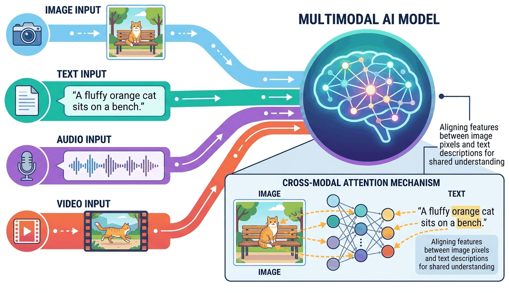

"The world is not made of words alone. To truly understand it, a machine must learn to see, hear, and read the messy, beautiful reality that surrounds us."
Pixel, Synesthetic AI Agent

Parts I-VI built text-only systems. Part VII opens the modality. This chapter covers vision-language models (Flamingo lineage to GPT-4V to Claude 3.5), audio + music generation, video generation (Sora, Veo), document understanding, embodied multimodal agents, and the 3D representations (Gaussian splatting) that may become the next standard. Multimodal is no longer "research", it is the default product surface for 2026.
Chapter Overview
Large language models began as text processors, but the frontier of AI has moved decisively toward multimodal systems that generate and understand images, audio, video, and structured documents alongside text. This chapter covers the complete landscape of multimodal AI, from diffusion models that create photorealistic images to speech synthesis systems that clone voices from seconds of audio, video generators that produce cinematic content from text prompts, and document understanding pipelines that extract structured data from scanned pages.
The chapter begins with image generation and vision-language models, exploring how systems like Stable Diffusion, DALL-E, and Midjourney work at an architectural level, along with the vision encoders and multimodal LLMs (GPT-4V, LLaVA, Gemini) that let models see and reason about images. It then covers audio and video generation, including text-to-speech, music synthesis, and the emerging world of text-to-video models like Sora. Finally, it addresses document AI, where OCR, layout analysis, and language models combine to extract information from real-world documents, a capability that feeds directly into LLM-powered applications.
By the end of this chapter, you will understand how modern generative models work across modalities, be able to build pipelines that combine text with images, audio, and video, and know how to choose the right approach for document understanding tasks. The chapter also explores unified omni-model architectures, embodied AI with Vision-Language-Action models, LLM-powered robotics, and 3D neural scene representation. These skills complement the embedding and vector search techniques covered earlier, enabling you to retrieve and generate content across multiple modalities.
Modern LLMs increasingly process images, audio, and video alongside text. This chapter covers vision-language models, document AI, and cross-modal architectures, extending your understanding of Transformers (Chapter 04) into the multimodal domain. These capabilities unlock the application patterns surveyed in Chapter 27.
Learning Objectives
- Explain the mechanics of diffusion models and flow matching for image generation, building on the transformer architecture foundations
- Use Stable Diffusion, DALL-E, and Midjourney APIs for controlled image generation and editing
- Understand vision encoders (ViT, CLIP, SigLIP) and how they connect to language models via learned embeddings
- Build applications with vision-language models including GPT-4V, LLaVA, and Gemini
- Implement text-to-speech pipelines using modern TTS models and voice cloning
- Understand architectures behind music generation and text-to-video models
- Design document understanding pipelines using OCR and layout-aware models
- Compare multimodal approaches and select the right tools for specific LLM applications
- Understand unified multimodal (omni) architectures and how they differ from pipeline approaches
- Describe Vision-Language-Action (VLA) models for embodied agents, including RT-2, OpenVLA, and sim-to-real transfer
- Explain how LLMs serve as planners and coordinators in robotic navigation and multi-robot systems
- Understand 3D Gaussian Splatting for neural scene representation and its integration with LLM-guided editing
Prerequisites
- Chapter 06: Inside LLMs (transformer architecture, attention mechanisms)
- Chapter 07: Training LLMs (pre-training, fine-tuning concepts)
- Chapter 13: LLM APIs (API usage patterns, streaming, structured outputs)
- Chapter 14: Prompt Engineering (effective prompting strategies)
- Basic understanding of neural network architectures (CNNs, encoders/decoders)
- Familiarity with Python and pip/conda for installing ML libraries
Sections
- 26.1 Image Generation & Vision-Language Models Diffusion models and flow matching for image generation. Stable Diffusion, DALL-E, and Midjourney architectures. Image editing with ControlNet and IP-Adapter. Vision encoders (ViT, CLIP, BLIP-2) and vision-language models (GPT-4V, LLaVA, Gemini).
- 26.2 Audio, Music & Video Generation Text-to-speech with VITS, Bark, and F5-TTS. Voice cloning and real-time audio (GPT-4o, Moshi). Music generation with MusicLM and Suno. Text-to-video with Sora, Runway, Kling, and Veo. Emerging 3D generation techniques.
- 26.3 Document Understanding & OCR TrOCR and modern OCR approaches. The LayoutLM family for document understanding. Document AI pipelines for invoices, contracts, and forms. Comparing traditional OCR, layout-aware models, and vision-language model approaches.
- 26.4 Unified Multimodal Models & Omni-Architectures Native multimodal architectures that process text, images, audio, and video within a single model. Omni-models, any-to-any generation, and the shift from pipeline-based to natively multimodal systems.
- 26.5 Embodied Multimodal Agents & Vision-Language-Action Models Vision-Language-Action (VLA) models for robot control. RT-2, OpenVLA, and Octo architectures. Simulation environments, domain randomization, and sim-to-real transfer for embodied agents.
- 26.6 LLM-Powered Robotics: Navigation, Planning, and Multi-Robot Coordination LLM task planning with SayCan, Code-as-Policies, and Inner Monologue. Robot navigation with VLMs and semantic maps. Multi-robot coordination and aerial-ground systems. Edge deployment on Jetson hardware, latency optimization, and safety verification.
- 26.7 3D Gaussian Splatting and Neural Scene Representation From NeRFs to 3D Gaussian Splatting for real-time rendering. Text-to-3D generation with DreamGaussian and SDS loss. Dynamic 4D Gaussians. LLM-guided 3D scene editing and generation. Deployment on web, mobile, and game engines.
What's Next?
In the next chapter, Chapter 27: LLM Applications, we survey major LLM application domains, from vibe-coding and AI-assisted writing to search and creative tools.